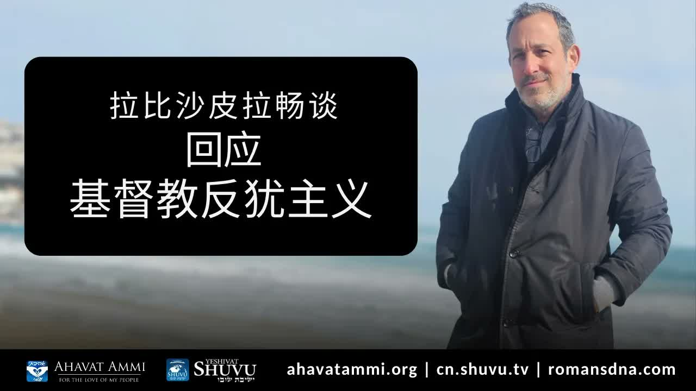

耶書亞、唯一的新婦、與對基督教反猶主義的回應 Yeshua, the One Bride, and a Reply to Christian Antisemitism
在 YouTube 留言區出現越來越多自稱「基督徒」卻反猶的言論之後，沙皮拉拉比博士直接回應：耶穌的真實希伯來名字是什麼？以色列為什麼是神的「長子」？神有沒有「換新婦」？這場「拉比之爭」最終，是對基督徒的悔改呼召。 After a wave of antisemitic comments from self-styled “Christians” on his channel, Rabbi Dr. Shapira responds directly: What is Jesus' real Hebrew name? Why does Scripture call Israel God's “firstborn son”? Did God ever “take a new bride”? This rabbinic reply is, in the end, a call to Christian repentance.
「為什麼一個猶太拉比要回應『基督教反猶主義』？」拉比沙皮拉用一句直白的話回答：「因為耶書亞 (Yeshua) 是猶太人。如果你不認識祂的猶太根源，你就不認識祂。」他並非在抽象地辯論，而是直接針對在他自己的 YouTube 留言區、Twitter、與基督教媒體上頻頻出現的具體謊言：說以色列在加薩犯下「種族滅絕」、說阿什肯納茲猶太人「不是真猶太人」、說神「換了新婦」、說福音書「廢除了妥拉」。拉比的回應並不是怒火，而是聖經學的核對——他帶我們回到出埃及記、何西阿書、以賽亞書，重新檢驗：神對以色列所立的約，祂自己有沒有撕掉？ “Why does a Jewish rabbi need to reply to ‘Christian antisemitism’?” Rabbi Shapira answers in one line: “Because Yeshua is Jewish. If you do not know His Jewish roots, you do not know Him.” His reply is not abstract debate. It targets the specific lies surfacing on his own YouTube comments, on Twitter, and across Christian media: that Israel is committing “genocide” in Gaza; that Ashkenazi Jews are “not real Jews”; that God “took a new bride”; that the Gospel “abolished the Torah.” The rabbi's response is not anger but a scriptural audit — he walks us back to Exodus, Hosea, and Isaiah to ask the question plainly: did God Himself ever tear up the covenant He made with Israel?
一、為什麼這場回應是必要的I. Why This Response Is Necessary
拉比沙皮拉開場的語氣是極不情願但極認真的：他並不喜歡公開「指責基督徒」，因為他自己一生致力於猶太人與基督徒在彌賽亞裡的合一。但近期他自己 YouTube 頻道下方湧現的留言——許多自稱基督徒的人散播血祭誣告、否認猶太人的身分、為以色列在加薩的自衛貼上「種族滅絕」的標籤——讓他不得不直接回應。 Rabbi Shapira opens reluctantly but very seriously: he does not enjoy publicly “rebuking Christians” — his life's work has been the unity of Jews and Christians in the Messiah. But the recent flood of comments on his own YouTube channel — self-identified Christians spreading blood libel, denying Jewish identity, branding Israel's self-defence in Gaza as “genocide” — forces him to reply directly.
他引用使徒保羅的勸勉（徒 17:11）——「他們天天考查聖經，要曉得這道是與不是」——作為他這段回應的方法論：不要憑情緒、不要憑網絡片段、不要憑你不認識的人的轉述，回到聖經本身。 He invokes the Apostle Paul's commendation (Acts 17:11) — “they searched the Scriptures daily to see whether these things were so” — as his methodology: not by emotion, not by social-media clips, not by hearsay from people you do not know. Go back to Scripture itself.
二、真實的名字 ── Yeshua ben YosefII. The Real Name — Yeshua ben Yosef
拉比沙皮拉用一個小細節開始：「耶穌基督」這個中文（與英文「Jesus Christ」）名字並不是耶書亞的真實名字。「Christ」是希臘文 Christos（χριστός），是希伯來文 Mashiach（מָשִׁיחַ，「受膏者」）的翻譯。「Jesus」則是希伯來文 Yeshua（ישוע，意思是「耶和華拯救」）經希臘文 Iēsous 再到拉丁文 Iesus，再到英文 Jesus 的多重轉寫。 Rabbi Shapira opens with a small detail: “Jesus Christ” is not Yeshua's actual name. “Christ” is Greek Christos (χριστός), the translation of Hebrew Mashiach (מָשִׁיחַ, “the anointed one”). “Jesus” is Hebrew Yeshua (ישוע, “The LORD saves”) transliterated through Greek Iēsous, Latin Iesus, into English Jesus.
祂的全名在希伯來世界中是 Yeshua ben Yosef（ישוע בן יוסף，「約瑟的兒子耶書亞」）——這是約瑟在馬利亞還未生產時就被天使指示要給孩子起的名字（馬太福音 1:21）：「你要給他起名叫耶穌（Yeshua），因祂要將自己的百姓從罪惡裡救出來。」「耶書亞」這個名字本身就是「神拯救」這個動詞的具體化。 His full name in the Hebrew world is Yeshua ben Yosef (ישוע בן יוסף, “Yeshua, son of Joseph”) — the very name the angel directed Joseph to give Him before Mary gave birth (Matthew 1:21): “You shall call His name Yeshua, for He will save His people from their sins.” The name “Yeshua” is the concrete embodiment of the verb “God saves.”
為什麼這個名字重要？因為一旦你失去希伯來名字，就容易失去這個名字所背負的整個歷史與盟約。當「耶穌基督」變成一個與「猶太歷史」無關的稱號時，反猶主義就有了空間滋長。祂的名字本身就告訴你：祂是猶太人。 Why does the name matter? Because once you lose the Hebrew name, you tend to lose the whole history and covenant the name carries. Once “Jesus Christ” becomes a title disconnected from Jewish history, antisemitism has room to grow. His name itself tells you: He is Jewish.
三、預言是有條件的 ── 約拿與尼尼微III. Prophecy Is Conditional — Jonah and Nineveh
拉比沙皮拉指出基督徒在末世論上常見的一個錯誤：把預言當作不可改變的腳本。其實聖經自己反覆告訴我們：預言是有條件的，預言隨人類的悔改改變。最經典的例子就是約拿書——神告訴約拿去宣告：「再過四十日，尼尼微必傾覆！」(約拿書 3:4)。但尼尼微悔改了。神就改變了祂的計劃。 Rabbi Shapira identifies a common Christian error in eschatology: treating prophecy as an unchangeable script. But Scripture itself tells us repeatedly: prophecy is conditional; it changes in response to human repentance. The classic example is Jonah — God told Jonah to proclaim: “Yet forty days, and Nineveh shall be overthrown!” (Jonah 3:4). Nineveh repented. God changed His plan.
彼得後書 3:12 教導同樣的原則：「切切仰望神的日子來到。」希臘文中的「切切仰望」(speudontas) 也可譯作「催促、加快」——也就是說，按照彼得，義人的禱告與聖潔生活，可以「加快」主再來的日子。預言不是被動觀看的銀幕；它是神與祂百姓之間活的對話。 2 Peter 3:12 teaches the same principle: “earnestly desiring the coming of the day of God.” The Greek speudontas can equally mean “hastening, accelerating” — that is, by Peter's own grammar, the prayers and holy lives of the righteous can “hasten” the day of the Lord's return. Prophecy is not a passive screen we watch; it is a living dialogue between God and His people.
拉比沙皮拉的應用：當基督徒看到伊朗對以色列的威脅、或加薩戰爭的恐怖場景時，禱告與悔改有真實的份量，能夠改變歷史的走向。被動觀望、甚至為「先知預言實現」而暗自高興的姿態，恰恰違背了聖經對預言的教導。 Rabbi Shapira's application: when Christians see Iran's threat against Israel or the horrors of Gaza, prayer and repentance carry real weight — they can change the course of history. The passive “watching prophecy unfold,” or worse, the secret pleasure that “prophecy is being fulfilled,” contradicts the very biblical teaching of prophecy.
四、以色列 ── 神的長子IV. Israel — God's Firstborn Son
基督徒稱耶書亞為「神的兒子」(Ben Elohim，בן אלוהים) 是合宜的。但拉比沙皮拉提醒我們：聖經更早就用「神的兒子」這個稱號稱呼以色列—— Christians rightly call Yeshua “the Son of God” (Ben Elohim, בן אלוהים). But Rabbi Shapira reminds us: Scripture already used “Son of God” for Israel, long before —
「你要對法老說：『耶和華這樣說：以色列是我的長子。』」——出埃及記 4:22 “You shall say to Pharaoh, ‘Thus says the LORD: Israel is My firstborn son.’”— Exodus 4:22
「以色列年幼的時候，我愛他；就從埃及召出我的兒子來。」——何西阿書 11:1 “When Israel was a child, I loved him, and out of Egypt I called My son.”— Hosea 11:1
這個並列極具份量：以色列是神的「長子」(firstborn son)；耶書亞是神的「獨生子」(only begotten Son)。兩者並非彼此排斥——耶書亞是從以色列裡出來的，是以色列這一身分的具體化。馬太引用何西阿 11:1「我從埃及召出我的兒子」來描寫耶書亞從埃及歸回（馬太福音 2:15），正是因為耶書亞重演了以色列的故事。 The parallel carries enormous weight: Israel is God's “firstborn son”; Yeshua is God's “only-begotten Son.” The two are not in conflict — Yeshua comes out of Israel; He is the embodiment of Israel's vocation. Matthew quotes Hosea 11:1's “out of Egypt I called my son” to describe Yeshua returning from Egypt (Matt 2:15) precisely because Yeshua recapitulates Israel's story.
同樣的並列出現在「僕人」的稱號上：以色列是神的「僕人」（以賽亞書 41:8：「但你以色列我的僕人」）；彌賽亞是神的「受苦的僕人」（以賽亞書 52:13）。彌賽亞是以色列的一部分；以色列也是彌賽亞的一部分。彼此不可分割。 The same parallel runs through the title “servant”: Israel is God's “servant” (Isaiah 41:8 — “But you, Israel, My servant”); the Messiah is God's “suffering servant” (Isaiah 52:13). The Messiah is a part of Israel, and Israel is a part of the Messiah. The two are inseparable.
五、神有沒有「換新婦」？V. Did God Take a “New Bride”?
在某些基督教傳統中，有一種教導說：神「離棄了以色列，娶了教會作新婦」。拉比沙皮拉把這個觀念定義得極為直接：這是反猶主義最深的神學根源之一，並且它與聖經本身的教導正面衝突。 In some Christian traditions there is a teaching that God “divorced Israel and married the Church as His new bride.” Rabbi Shapira names this very directly: this is one of the deepest theological roots of antisemitism, and it stands in direct contradiction to Scripture itself.
「我必聘你永遠歸我為妻，以仁義、公平、慈愛、憐憫聘你歸我；也以信實聘你歸我，你就必認識我耶和華。」——何西阿書 2:19-20（關於以色列） “I will betroth you to Me forever; I will betroth you to Me in righteousness and in justice, in steadfast love and in mercy. I will betroth you to Me in faithfulness; and you shall know the LORD.”— Hosea 2:19-20 (concerning Israel)
拉比沙皮拉指出：神不是多妻主義者。祂在何西阿書中說「永遠聘你歸我」——而那個「你」，按整段經文的上下文，就是以色列。如果神後來「換了一位新婦」（教會），那神就是不忠的——但聖經一再告訴我們，神是信實的。「Amen」(אמן) 這個詞本身就是「神是信實的王」(Adonai melech ne'eman) 的縮寫。神不會違背祂與以色列所立的永約。 Rabbi Shapira's point: God is not polygamous. In Hosea He says “I will betroth you to Me forever” — and that “you,” in the plain context, is Israel. If God later “took a new bride” (the Church), God would be unfaithful. But Scripture says again and again: God is faithful. The very word “Amen” (אמן) is contracted from “Adonai melech ne'eman” — “The LORD is a faithful King.” God will never renege on the everlasting covenant He cut with Israel.
那教會在哪裡？保羅在以弗所書 2:11-22 中說得很清楚：教會（外邦信徒）是「被接到」以色列的橄欖樹上、與以色列同得應許的——不是取代以色列。一棵樹，一個約，一位新婦——只是這位新婦因彌賽亞而擴展了她的家，把忠心的列國納入她的家中。 Where then is the Church? Paul says it plainly in Ephesians 2:11–22: the Church (Gentile believers) is “grafted into” Israel's olive tree, made fellow-heirs of the promise — never replacing Israel. One tree. One covenant. One bride — and that bride, through the Messiah, has expanded her house to include the faithful of the nations.
六、抉擇 ── 像路德還是像亞伯拉罕？VI. The Choice — Be Like Luther, or Be Like Abraham?
拉比沙皮拉把這場「我民信仰之爭」(Milchemet Emunah) 中外邦基督徒的抉擇，框入兩個歷史人物的對比： Rabbi Shapira frames the choice facing Gentile Christians in this “war of faith” (Milchemet Emunah) by contrasting two historical figures:
路德 (Martin Luther)——宗教改革的偉大領袖，但在他生命的後期寫下《論猶太人及其謊言》(Von den Juden und ihren Lügen) 這本充滿反猶毒素的著作，這本書後來被納粹用作意識形態彈藥。路德在他生命的某些時刻，沒有彎下身去聽神對以色列的呼召。 Martin Luther — the great Reformer, but who at the end of his life wrote “On the Jews and Their Lies” (Von den Juden und ihren Lügen), a poisonously antisemitic work later quarried by the Nazis for ideological ammunition. At certain moments Luther did not stoop to hear God's call concerning Israel.
亞伯拉罕——「信心之父」，神親自呼召他、與他立約、應許他「祝福你的，我必賜福；咒詛你的，我必咒詛」（創世記 12:3）。亞伯拉罕把以色列當成自己的家、當成神立約的對象——這是所有信徒的原型。 Abraham — the “father of faith,” called personally by God, in covenant with God, given the promise: “I will bless those who bless you, and curse those who curse you” (Genesis 12:3). Abraham treated Israel as his own house and as the object of God's covenant — the prototype for every believer.
拉比的問題很直接：「外邦基督徒，你今天要選擇成為哪一個？」 The rabbi's question is direct: “Gentile Christian — which one will you choose to be today?”
七、對華人基督徒的意義VII. What This Means for Chinese Christians
第一，華人基督徒受西方反猶神學（取代神學、災前被提論等）影響的程度，比我們承認的要深。許多華人教會的末世論教材直接翻譯自西方福音派著作，沒有經過希伯來根源的篩選。這篇文章邀請我們停下來，從以色列的視角重新核對。 First, Chinese Christians have been more deeply shaped by Western anti-Israel theology — replacement theology, pre-trib Rapturism, etc. — than we usually admit. Much Chinese-church eschatological material is translated directly from Western evangelical works without ever passing through the Hebrew-roots filter. This essay is an invitation to stop and audit, from Israel's vantage point.
第二，「以色列是神的長子」這個事實，對華人基督徒應該是令人感動而非令人嫉妒的。我們是亞伯拉罕之家裡的「弟弟」——被接進來的、與長子同得產業的、與大哥同侍奉父親的。 Second, the truth that “Israel is God's firstborn” should be moving to Chinese Christians, not threatening. We are the “younger brothers” in the house of Abraham — grafted in, fellow heirs with the firstborn, serving the Father alongside the elder brother.
第三，「神只有一位新婦」這個教導，給我們的婚姻論、教會論、忠誠觀都帶來深遠的影響。神對自己的約是永不撕毀的——這位神也呼召我們在自己的婚姻、家庭、教會、與弟兄姊妹的關係上，學習永不撕毀。 Third, the teaching that “God has only one bride” reframes our marriage theology, our ecclesiology, and our understanding of fidelity. God never tears up His covenant — and this God calls us, in our own marriages, families, churches, and friendships, to learn never to tear up either.
八、關於分辨VIII. A Word on Discernment
拉比沙皮拉的一些應用——例如把今日所有反以色列的基督徒劃為「災前被提論的問題」——是一種歸納，而非每個個案都成立。同樣，把馬太福音 25 中「我這弟兄中一個最小的」嚴格限定為猶太人，是一種讀法，但不是唯一的讀法。 Some of Rabbi Shapira's applications — e.g. tracing every anti-Israel Christian back to “the pre-trib Rapture problem” — are generalisations; they do not hold case by case. Likewise, restricting Matthew 25's “the least of these my brothers” strictly to Jewish people is one reading, not the only one.
話雖如此，他在這段教導中所引用的核心經文——出埃及記 4:22、何西阿書 11:1、何西阿書 2:19、以賽亞書 41:8、羅馬書 11:18——都是聖經的明文。任何把以色列從神的計劃中刪去的神學，都直接違背這些經文。這不是 Drash，是 P'shat。 That said, the core texts in this teaching — Exodus 4:22, Hosea 11:1, Hosea 2:19, Isaiah 41:8, Romans 11:18 — are all plain Scripture. Any theology that erases Israel from God's plan directly contradicts these verses. That is not drash; it is p'shat.
九、結語 ── 像亞伯拉罕一樣站立IX. Closing — Stand Like Abraham
「停止反猶主義。學習從猶太人那裡看見耶書亞的形象——因為救恩是從猶太人出來的（約 4:22）。預備你自己——猶太君王將要回來。Am Yisrael Chai。」 “Stop antisemitism. Learn to see the image of Yeshua through the Jewish people — for salvation is of the Jews (John 4:22). Prepare yourself — the Jewish King is returning. Am Yisrael Chai.”